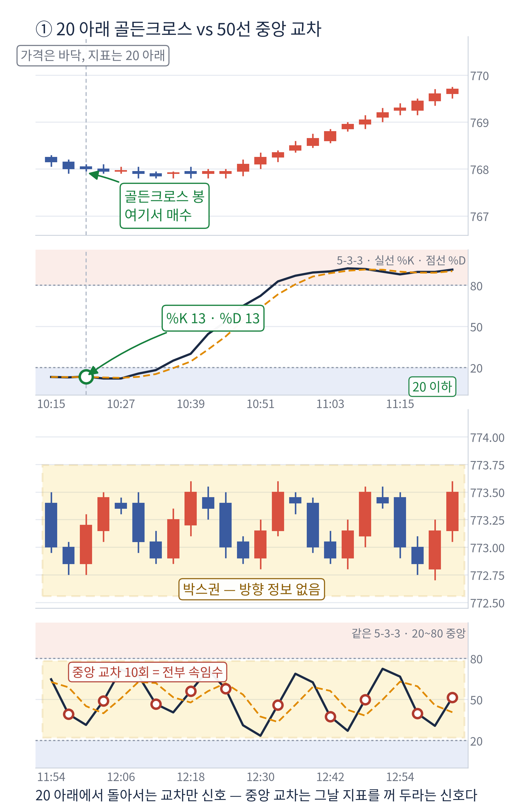
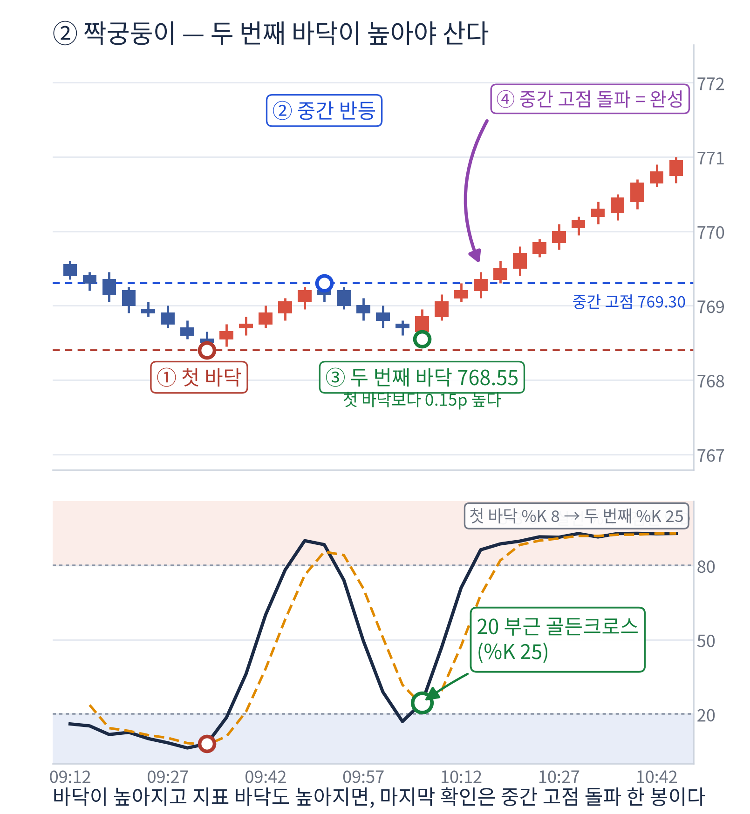
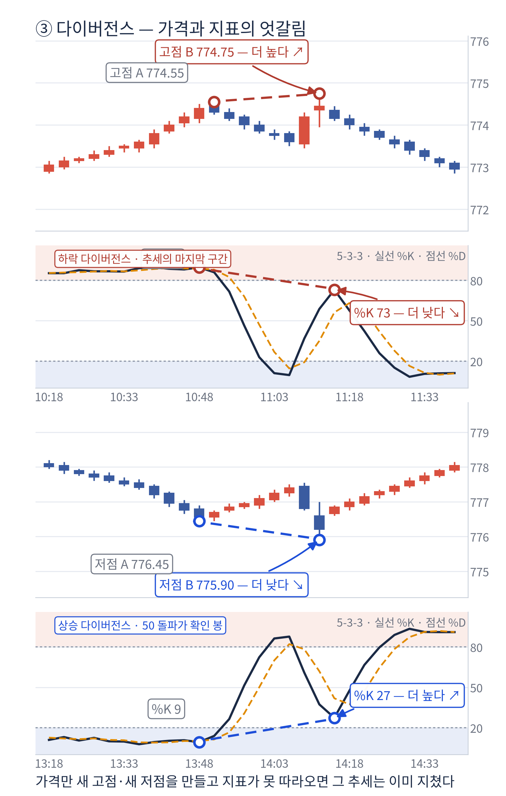
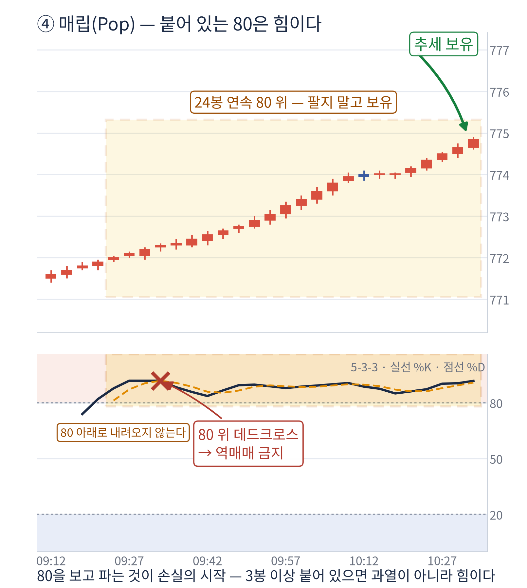
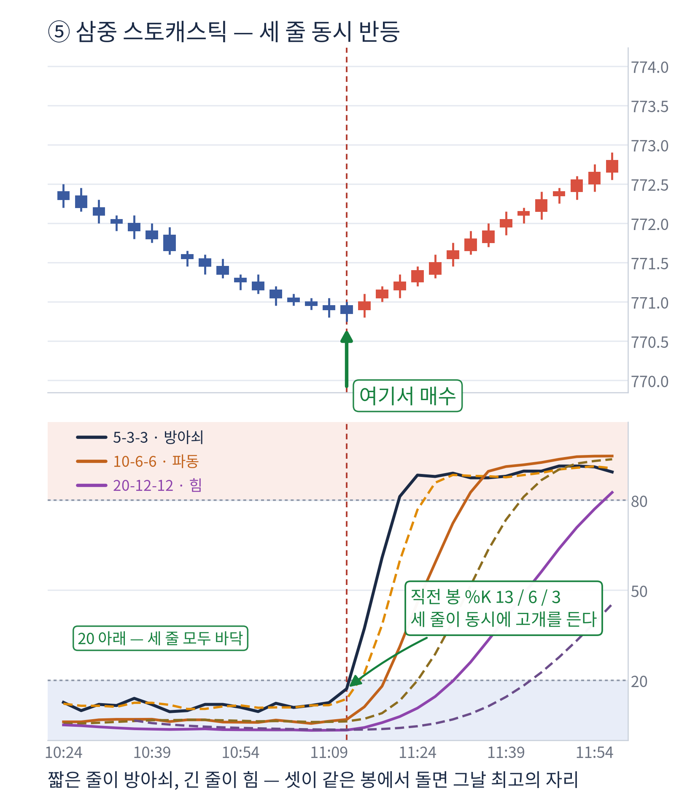
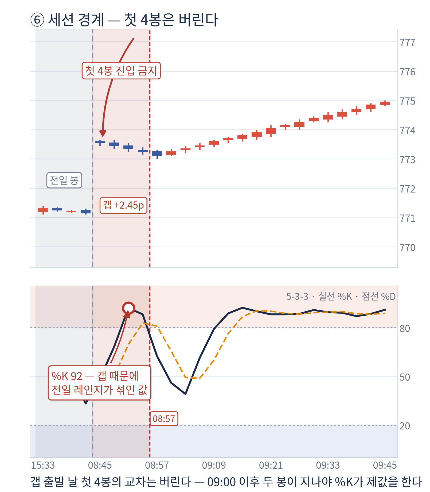

스토캐스틱은 외우는 지표가 아니라 눈에 익히는 그림입니다. 긴 설명은 걷어 내고 3분봉을 25~30봉만 크게 확대해 그 자리에 표시했습니다. 한 장에 3줄 — 모양·뜻·행동만 보면 됩니다.
80을 보고 파는 것, 20을 보고 사는 것, 중앙 교차 추격, 신호봉 마감 전 진입. 이 넷이 스토캐스틱으로 돈을 잃는 전부입니다.
20 아래 골든크로스 vs 50선 중앙 교차
같은 교차라도 위치가 다르면 뜻이 반대 — 위는 매수 1순위, 아래는 그날 지표를 끄라는 신호

- 모양위는 두 선이 20 아래에 붙어 있다가 위로 갈라진다. 아래는 20~80 사이에서 두세 봉마다 교차한다.
- 뜻20 아래 교차는 팔 사람이 다 팔렸다는 뜻, 중앙 교차는 방향 정보가 없다는 뜻이다.
- 행동위는 봉 마감에 매수 1순위. 아래는 그 구간 모든 신호를 버리고 관망한다.
짝궁둥이(쌍바닥) & 실패 스윙
두 번째 바닥이 첫 바닥보다 높아야 한다 — 마지막 확인은 중간 고점 돌파 한 봉

- 모양20 아래 첫 바닥 → 중간 반등 → 첫 바닥보다 높은 두 번째 바닥 → 중간 고점 돌파.
- 뜻바닥이 높아지고 %K 바닥도 높아지면 매도 압력이 약해졌다는 뜻이다.
- 행동두 번째 바닥 골든크로스로 절반, 중간 고점 돌파 봉에 나머지. 첫 바닥이 깨지면 실패 스윙으로 폐기.
상승 & 하락 다이버전스
가격과 지표의 추세선이 반대로 벌어지는 자리 — 추세의 마지막 구간

- 모양가격에는 ↗(또는 ↘) 추세선, %K에는 반대 방향 추세선이 그려진다.
- 뜻가격은 가는데 힘이 따라오지 못한다 — 추세가 이미 지쳤다는 신호다.
- 행동기존 포지션은 청산. 역방향 진입은 50 돌파(상승)나 새 교차가 확인된 뒤에만.
매립(Pop) 구간 — 역매매 금지
80 위에 세 봉 이상 붙어 있으면 과열이 아니라 힘이다

- 모양%K·%D가 80 위에 3봉 이상 붙어 있고, 그 사이 데드크로스가 한두 번 뜬다.
- 뜻붙어 있다는 것은 신규 매수가 계속 들어온다는 뜻 — 과열이 아니라 추세의 증거다.
- 행동역매매 금지. 80 이탈 뒤 첫 골든크로스까지 기다리거나, 보유자는 그대로 들고 간다.
삼중 스토캐스틱 동시 정렬
5-3-3 · 10-6-6 · 20-12-12 세 줄이 같은 봉에서 고개를 드는 바닥 타점

- 모양짧은 줄(5-3-3)이 먼저 꺾이고, 10-6-6과 20-12-12가 같은 봉에서 따라 올라온다.
- 뜻단기 방아쇠와 중기 힘이 동시에 바닥을 확인한 자리 — 셋 중 하나만 돌면 신뢰도가 떨어진다.
- 행동세 줄이 모두 20 아래일 때만 이 신호로 본다. 한 줄이라도 20 위면 절반 사이즈.
세션 경계 오염 — 첫 4봉은 버린다
갭 출발 날 %K는 전일 봉이 섞인 값이다

- 모양갭 뒤 첫 네 봉의 %K가 90~100까지 튀었다가 두세 봉 만에 급락한다.
- 뜻5봉 레인지에 전일 봉이 남아 있어 지표가 실제 위치보다 높게 계산된 것이다.
- 행동첫 4봉 교차는 전부 무시. 09:00 이후 두 봉이 지나 %K가 제값을 할 때 다시 본다.
실전 세팅과 위치
실전 세팅 네 가지
3분봉 한 창에 5-3-3, 15분봉에 20-12-12| 세팅 | 쓰는 차트 | 실제로 보는 창 | 용도 |
|---|---|---|---|
| 5-3-3 | 1·3분봉 | 3분봉 15분 | 초단타 진입 방아쇠 |
| 10-6-6 | 3·5분봉 | 5분봉 50분 | 데이트레이딩 주력 |
| 12-5-5 | 5·15분봉 | 15분봉 3시간 | 오전 파동 추적 |
| 20-12-12 | 15·60분봉 | 15분봉 5시간 | 스윙·큰 추세 확인 |
교차 위치별 의미
위치가 다르면 신호도 다르다| %K 위치 | 의미 | 대응 |
|---|---|---|
| 20 이하 | 과매도 탈출 시도 | 매수 1순위, 봉 마감 확인 후 |
| 20~50 | 반등 초기 | 50 돌파 기다려 진입 |
| 50 부근 | 주도권 경계 | 방향 확인용, 진입 보류 |
| 50~80 | 추세 지속 중 눌림 | 보유 유지, 신규 진입 신중 |
| 80 이상 | 과열처럼 보이지만 매립이면 힘 | 80 이탈까지 대기, 역매매 금지 |
무효화·손절
무효화·손절
이렇게 되면 신호는 끝난 것| 조건 | 행동 |
|---|---|
| 신호봉 마감 전 교차 | 진입 금지 |
| 신호봉 저점 -1틱 이탈 | 즉시 손절, 새 신호에서만 재진입 |
| 3봉 내 20(80) 탈출 실패 | 신호 폐기·청산 |
| %K 반대 재교차 | 청산 |
| 진입 후 6봉 내 목표 미달 | 시간 손절(절반 청산) |
| 2연패 | 당일 중단, 15분봉 관찰만 |
장중 8단계 체크
여덟 중 6개 이상 통과할 때만 진입하고, ④(교차 위치)와 ⑧(손절 폭)은 필수입니다. 둘이 빠지면 나머지가 다 맞아도 들어가지 않습니다.
차트 6장과 같은 내용을 인쇄용으로 묶은 PDF 내려받기 도 있습니다. 공식 계산·세션 경계·틱 환산표까지 담았습니다.
차트는 모두 계산 설명용 가상 3분봉(코스피200 선물 0.05p 틱, 08:45 시작)이며 실제 11/24 시세가 아닙니다. 출처: StockCharts ChartSchool, 키움증권 영웅문 지표 도움말, 한국거래소 코스피200 선물 상품명세, TradingView 도움말, Lane(1950년대) 원전 요약, Charles Schwab, LuxAlgo, QuantPage.